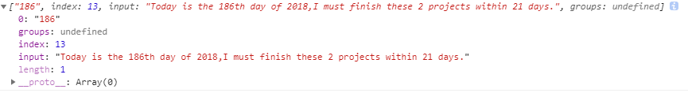
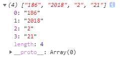
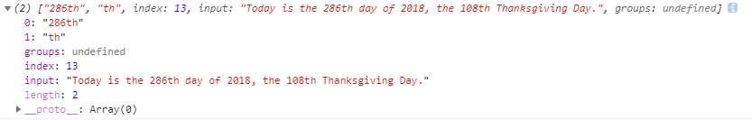
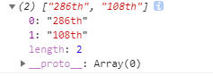

详解正则表达式匹配方法 match()
在前端开发中，正则表达式是一大利器。所以我们这次就来讨论下match()方法。
match本身是JavaScript语言中字符串对象的一个方法，该方法的签名是
match([string] | [RegExp])
它的参数既可以是一个字符串，也可以是一个正则表达式。该方法绝大多数都是要使用正则表达式的，所以参数为string的情况不在本文讨论范围之内。其实参数即使是一个简单的string，其返回值也跟使用正则表达式的结果无异，而且使用正则表达式的变化比较多，用法复杂，所以我们只讨论正则的用法。
一、返回值问题。
我们必须明确的是，这个方法跟其他语言是不同的。JavaScript中的match()方法的返回值是数组或者是null。如果原字符串中匹配到了正则表达式指代的子串，则返回一个数组，否则返回null。
二、不使用全局匹配
var str = 'Today is the 186th day of 2018,I must finish these 2 projects within 21 days.'; var results = str.match(/\d+/); //只能匹配字符串中出现的首个数字，未使用全局匹配符g console.log(results);
输出的结果是：

再强调一次，这个例子的结果是没有使用全局匹配的正则表达式的匹配结果。说白了，就是正则表达式的末尾没跟g。由于不适用全局匹配，所以match()方法只找到源字符串中首次匹配的子串后，就立刻得到返回结果，不再比较之后剩余的部分是否还有能匹配上的内容。
我们可以看到，match()的结果是一个数组，该数组一共有4项。各项代表的意思如下：
第0项：匹配到字符串
第1项：groups：undefined，这表示当前的正则表达式没使用分组
第2项：index表示首次匹配上的子串的起始下标。
第3项：input，表示源字符串
第4项：length，表示匹配到的结果个数，由于这里不使用全局匹配，只找到首次匹配项就结束了，所以匹配结果只有1个，length也就是1。
再次强调下，如果在正则表达式末尾不使用全局匹配符g，在本例中是无法匹配到所有的数字。反过来说就是，如果想匹配所有的符合条件的子串，就必须在正则的末尾添加全局匹配符g
三、使用全局匹配
var str = 'Today is the 186th day of 2018,I must finish these 2 projects within 21 days.'; var results = str.match(/\d+/g); //匹配所有的数字，使用了全局匹配符g console.log(results);
这次我们在正则表达式的末尾添加了 g，该正则表达式的意图是，在字符串str中匹配出所有的由数字组成的子符串。
这次结果如下：

可以看到，这次的返回值仍然是个数组，只不过这个数组的内容跟上边不使用全局匹配时大不相同的。由于原字符串中出现了4个数字组成的子串的情况，所以该数组中出现了4个项。length属性同样为匹配到的结果个数，这里显然是4个。
仔细看会发现，此时返回的数组中，没有index，input这2项，不过这两项并不十分重要。
四、使用分组
使用分组时的情况比较麻烦，还要看有没有使用全局匹配，也就是有没有在正则表达式的末尾添加g
4.1 使用分组，且不使用g
var str = 'Today is the 286th day of 2018, the 108th Thanksgiving Day.'; var results = str.match(/\d+(th)/); //匹配str中首个以数字开头，并且以th结尾的子串 console.log(results);
输出结果是：

由于该正则表达式为： /\d (th) /，该表达式中使用了小括号（），在此处的作用为分组。所以match()的结果是带有分组特征的。返回的数组包含多个元素，第一个元素是以贪婪模式找到的最长的匹配，之后的元素依次为该匹配中的第一、第二、第三 ......个分组，这里只有1个分组，所以也就只匹配到1个分组结果，也就是”th"。
假如正则表达式改成：/\d+(t)(h)/，那么匹配到的项就有3个，分别是 ： '286th' 、 't' 、'h'。我相信大家看到这里，对于分组的意义，以及如何匹配分组就已经了解了。
数组中其它项不在解释了，参考上边的。
需要注意的是，这种结果是前提是：1.使用分组，2.不做全局匹配。
4.2 使用分组，同时使用全局匹配g
var str = 'Today is the 286th day of 2018, the 108th Thanksgiving Day.'; var results = str.match(/\d+(th)/g); //匹配str中所有的以数字开头，并且以th结尾的子串 console.log(results);
这次的代码，跟上次的代码区别只有一点，就是正则表达式末尾多了个g，表示全局匹配。
结果也是大不相同的。

结果说明了一切，当正则中使用全局匹配符g，即使有分组的存在，在匹配结果中也只有匹配到的最长的，那些分组的子匹配都不见了。
具体表现为：这次匹配到的结果是 ’286th‘ 和 ‘’108th’ ，前一个例子中使用分组是出线的那个单独的分组子匹配 ‘th’，这一项不见了。我们把这个现象理解为，只要使用了全局匹配模式，那么match()将只返回“贪婪”的匹配结果，这里的“贪婪”指的就是只招那个最长的能匹配上的字符串，至于分组项，就忽略了。

【前端】SpreadJS表格控件，可嵌入系统开发的在线Excel
【活动】“魔程”社区训练营技术沙龙——React 前端开发专场
【推荐】码云企业版，高效的企业级软件协作开发管理平台
【推荐】程序员问答平台，解决您开发中遇到的技术难题
· JavaScript之match()方法讲解
· 正则表达式中的exec和match方法的区别
· JavaScript match() 方法
· 正则表达式的方法
· 简单正则表达式笔记
· 手机不止包含了46种化学元素还有可以做实验的APP……
· 想象38万公里之外的世界
· 科大讯飞完成1.08亿股定增，国家级产业基金入股
· 广州向小学生提供配有北斗导航的智能手表
· 美团申请导航电子地图甲级资质未过？回应：消息不实
» 更多新闻...